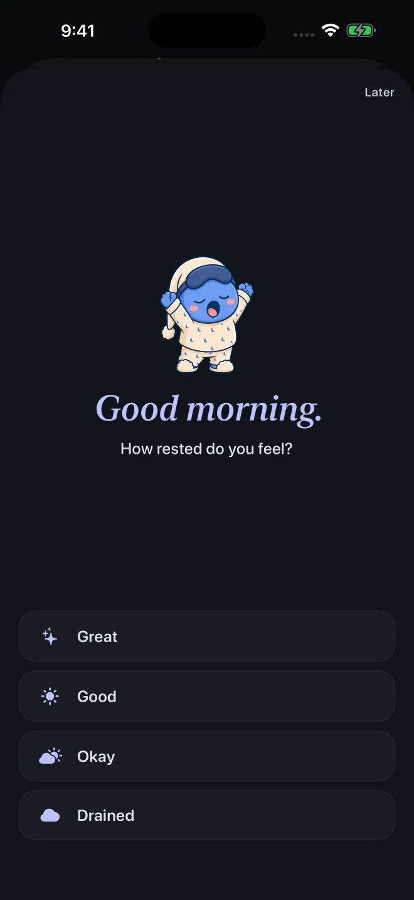
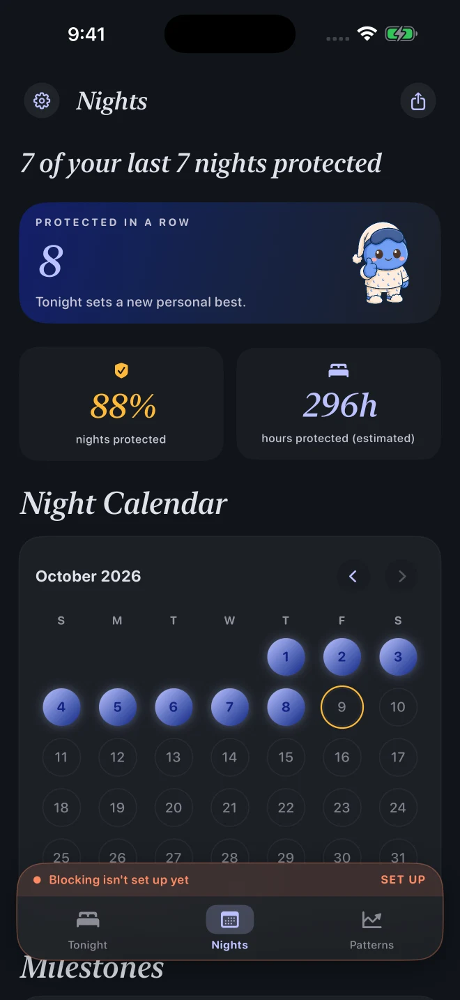
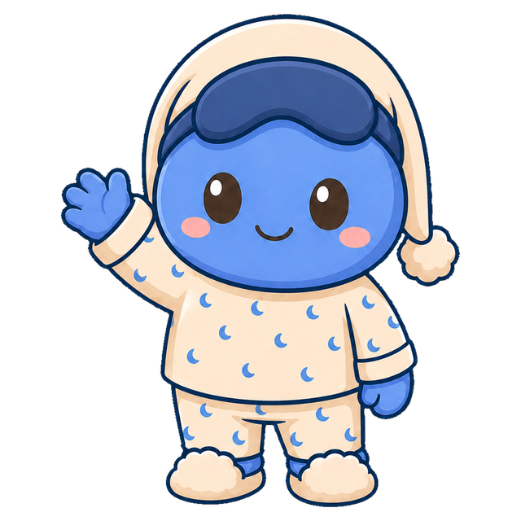
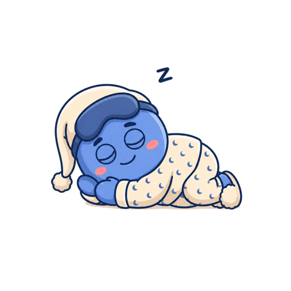
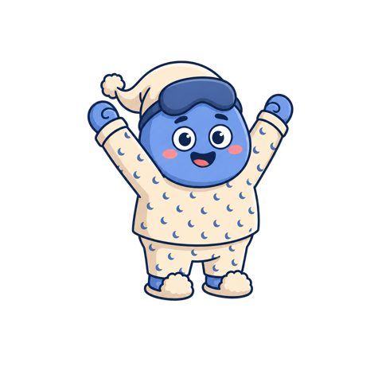
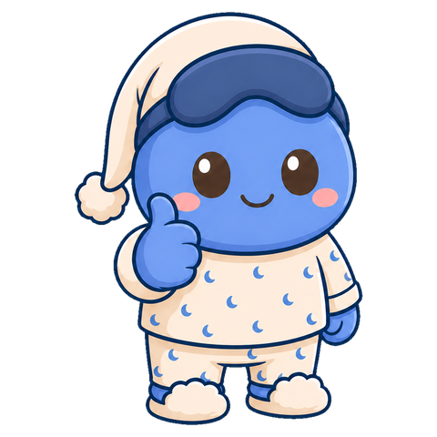
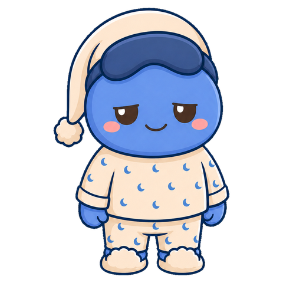
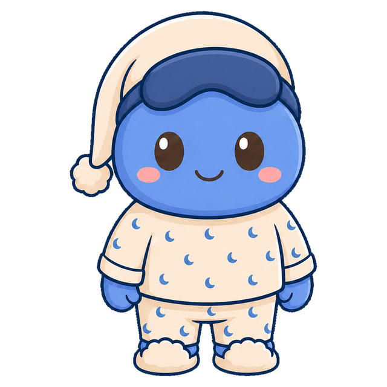

A bedtime app blocker for iPhone
Set a bedtime
for your apps.
You opened your phone for a minute. Now it’s past midnight. 28 Hour Day blocks the apps you choose from bedtime until wake time, with short unlocks when you need them.
Get an email when it’s ready.
28 Hour Day is coming to the App Store.
One launch email. How we use your email.
● Free to use. No account or subscription required.

How it works
Decide before you’re tired.
Choose what gets blocked
Choose your apps, bedtime, wake time, and active nights. Allow Screen Time access so blocking can start on schedule.
Need a few more minutes?
Set your short unlock to 5 or 10 minutes in Settings. When that time is up, blocking resumes automatically.
Check in the next morning
Record how rested you feel. Your night history keeps track of protected nights and unlocks, so you can look back over time.
Inside 28 Hour Day
A look at the app.
Set your schedule, check in, and see how your nights are going. Captured from the app in October 2026. The night history below shows example data.


How did you sleep?
Record how rested you feel and look back at last night.
Example check-in

Look back at your nights
See your streak and protected nights, with a calendar below when you want the details.
Nights detail · Example historyTap any image to see the full simulator capture.
A few other things
Make it fit your evening.
Try a grayscale wind-down
An optional guide walks you through two iPhone Shortcuts automations: one to turn color off at bedtime, another to bring it back in the morning.
Keep tonight in view
Widgets and Live Activities show your night’s status. You can also choose a wind-down activity and set bedtime or morning reminders.
Compare with Apple Health
If you already have sleep data in Apple Health, you can compare it across protected and unlocked nights. This is optional, and the sleep data stays on your iPhone.
A little perspective
Those extra minutes add up.
How long do you usually spend on your phone after getting into bed?
This is time spent scrolling, not a prediction of sleep gained. Based on the same amount every night for 365 days.
Meet Blu
Blu’s here, too.
That’s Blu, the little blue face you’ll see around the app. Sometimes asleep, sometimes stretching, occasionally looking like you feel before coffee.





Questions
Before you try it.
When can I get it?
28 Hour Day is coming to the App Store. Join the waitlist and we’ll email you when it’s available.
Can I still use a blocked app?
Yes. You can take a short unlock, set to 5 or 10 minutes in Settings. Blocking resumes afterward and ends at your scheduled wake time. If you block a whole category, a short unlock may apply to that category.
What does it cost?
The complete app is free to use, including optional Cloud Backup. No subscription or in-app purchase is required.
Do I need an account?
No. Your schedule and progress are saved on your iPhone. You can create an account in Settings if you’d like to back them up. Your Screen Time selections stay on your device. See our privacy policy for details.
Can I choose which nights it runs?
Yes. Set a bedtime and wake time, then choose the days that schedule applies to. The sleep window can cross midnight. You can change it in Settings.
Does it track my sleep?
The app doesn’t record sleep itself. Morning check-ins reflect how rested you say you feel. With your permission, it can also compare sleep already recorded in Apple Health. It isn’t a medical or treatment tool.
Which phones does it work on?
28 Hour Day is for iPhone running iOS 17.2 or later. Blocking needs Screen Time permission. Notifications and Apple Health access are optional.

Ready to put your phone down at bedtime?
Leave your email and we’ll let you know when you can try 28 Hour Day.
One launch email. How we use your email.